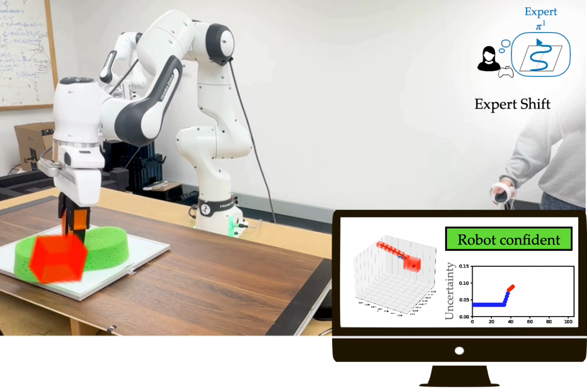
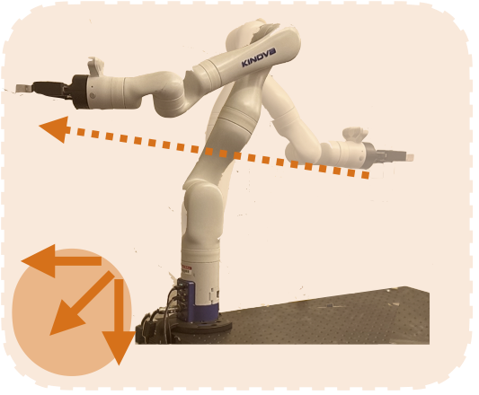
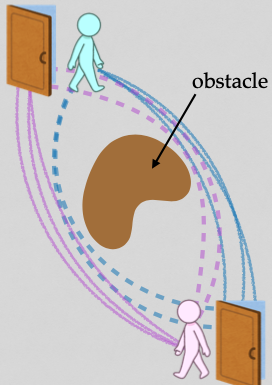
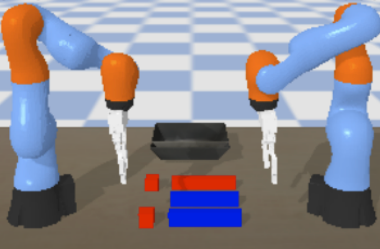
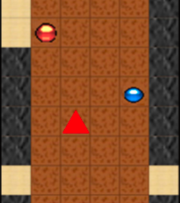
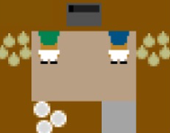
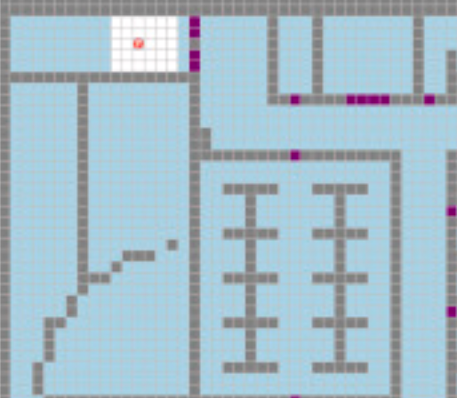
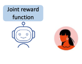
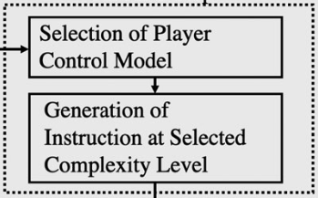

Research
I'm interested in developing algorithms to enable fluent human-robot coordination and collaboration.
I currently work on projects focused on uncertainty quantification, human-robot collaboration, adaptation, and modeling human behavior.
|
|

|
Conformalized Interactive Imitation Learning: Handling Expert Shift and Intermittent Feedback
Michelle Zhao, Reid Simmons, Henny Admoni, Aaditya Ramdas*, Andrea Bajcsy*
Under review, ICLR, 2025
project site /
bibtex
In interactive imitation learning (IL), uncertainty quantification offers a way for the learner (i.e. robot)
to contend with distribution shifts encountered during deployment by actively seeking additional feedback
from an expert (i.e. human) online. From the conformal prediction side, we introduce a novel uncertainty
quantification algorithm called intermittent quantile tracking (IQT) that leverages a probabilistic
model of intermittent labels, maintains asymptotic coverage guarantees, and empirically achieves
desired coverage levels. From the interactive IL side, we develop ConformalDAgger, a new approach
wherein the robot uses prediction intervals calibrated by IQT as a reliable measure of deployment-time
uncertainty to actively query for more expert feedback.
|
|

|
Conformalized Teleoperation: Confidently Mapping Human Inputs to High-Dimensional Robot Action
Michelle Zhao, Reid Simmons, Henny Admoni, Andrea Bajcsy
RSS, 2024
project site /
paper /
bibtex /
video
Assistive robotic arms often have more degrees-of-freedom than a human teleoperator can control with
a low-dimensional input, like a joystick. To overcome this challenge, existing approaches use
data-driven methods to learn a mapping from low-dimensional human inputs to high-dimensional
robot actions. However, determining if such a black-box mapping can confidently infer a user's
intended high-dimensional action from low-dimensional inputs remains an open problem. Our key idea
is to adapt the assistive map at training time to additionally estimate high-dimensional action
quantiles, and then calibrate these quantiles via rigorous uncertainty quantification methods.
|
|

|
Multi-Agent Strategy Explanations for Human-Robot Collaboration
Ravi Pandya*, Michelle Zhao*, Changliu Liu, Reid Simmons, Henny Admoni
ICRA, 2024
paper /
bibtex
In this work, we investigate how to generate multi-agent strategy explanations for
human-robot collaboration. We formulate the problem using a generic multi-agent planner, show how
to generate visual explanations through strategy-conditioned landmark states and generate textual
explanations by giving the landmarks to an LLM.
|
|

|
Learning Human Contribution Preferences in Collaborative Human-Robot Tasks
Michelle Zhao, Reid Simmons, Henny Admoni
CORL, 2023
paper /
bibtex
We propose a method for representing human and robot contribution constraints in collaborative human-robot tasks. Additionally,
we present an approach for learning a human partner's contribution constraint online during a
collaborative interaction. We evaluate our approach using a variety of simulated human partners in
a collaborative decluttering task.
|
|

|
The Role of Adaptation in Collective Human–AI Teaming
Michelle Zhao, Reid Simmons, Henny Admoni
Topics in Cognitive Science, 2022
paper /
bibtex
This paper presents a framework for defining artificial intelligence (AI) that adapts to individuals within a group,
and discusses the technical challenges for collaborative AI systems that must work with different human partners.
Collaborative AI is not one-size-fits-all, and thus AI systems must tune their output based on each human partner's
needs and abilities.
|
|

|
Coordination With Humans Via Strategy Matching
Michelle Zhao, Reid Simmons, Henny Admoni
IROS, 2022
paper /
bibtex /
video
This work autonomously recognizes available task-completion strategies by observing human-human teams performing a collaborative task. By
transforming team actions into low dimensional representations using hidden Markov models, we can
identify strategies without prior knowledge. Robot policies are learned on each of the identified
strategies to construct a Mixture-of-Experts model that adapts to the task strategies of unseen human
partners.
|
|

|
Teaching Agents to Understand Teamwork: Evaluating and Predicting Collective
Intelligence as a Latent Variable via Hidden Markov Models
Michelle Zhao*, Fade Eadeh*, Thuy-Ngoc Nguyen, Pranay Gupta, Henny Admoni, Cleotide Gonzalez, Anita Williams Woolley
Computers in Human Behavior, 2022
paper /
bibtex
We show by learning the set of hidden states representing a team’s observed collaborative process
behaviors over time, we both learn information about the team’s collective intelligence (CI), predict how CI will evolve in
the future, and suggest when an agent might intervene to improve team performance.
|
|

|
Machine Teaching of Collaborative Policies for Human Inverse Reinforcement Learning
Nyomi Morris, Michelle Zhao, Reid Simmons, Henny Admoni
RL-CONFORM Workshop: RL Meets HRI, Control, and Formal Methods (IROS), 2023
workshop paper
Best Poster Presentation Award
We consider the problem of teaching a human partner a joint reward function, which captures how both
human and robot should contribute to the task. This reward, which is known only to the robot, is
joint over human and robot actions, and encompasses constraints over how the human and robot should
contribute to a task. By adapting existing machine teaching frameworks for our collaborative domain,
we seek to provide a minimal number of demonstrations such that a human can learn the rewards.
|
|
|
Learning Human Preferences for Personalized Assistance in Household Tasks
Daphne Chen, Michelle Zhao, Reid Simmons
AAAI Workshop on User-Centric Artificial Intelligence for Assistance in At-Home Tasks, 2023
workshop paper
We propose a method for generating a customizable quantity of synthetic data that reflects the variability
in task execution styles seen in the real-world task, and enables us to train a baseline sequential
model that predicts the next action a participant will take within a cooking activity.
|
|

|
Adapting Language Complexity for Ai-Based Assistance
Michelle Zhao, Reid Simmons, Henny Admoni
ACM/IEEE International Conference on Human Robot Interaction, Lifelong Learning and Personalization in Long-Term Human-Robot Interaction (LEAP-HRI), 2021
workshop paper
We present a closed-loop interaction framework that adapts the level of information complexity based
on the human partner’s observable cognitive understanding. This work investigates how
knowledge and preparation impact the suitability of di erent complexity levels, motivating dynamic interaction.
|
Teaching Assistant, Graduate Human Robot Interaction, CMU, Fall 2022
Teaching Assistant, Undergraduate Human Robot Interaction, CMU, Spring 2022
Teaching Assistant, Networks: Structure and Economics, Caltech, Winter 2020
Teaching Assistant, Machine Learning and Data Mining, Caltech, Winter 2019
Teaching Assistant, Machine Learning Systems, Caltech, Fall 2018
Teaching Assistant, Machine Learning Systems, Caltech, Fall 2018
|
|
{kind=link}